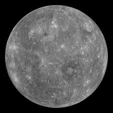
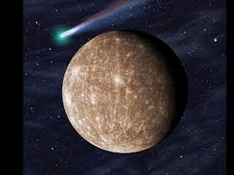
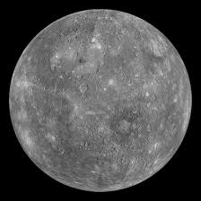
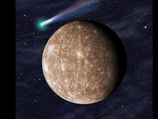

Mercury is the smallest planet in the solar system,
and it is also the planet closest to the Sun,
making it the most difficult of the planets to see with the unaided eye.
Because its rising or setting is always within about two hours of the Sun's,
Mercury is never observable when the sky is fully dark.
 


